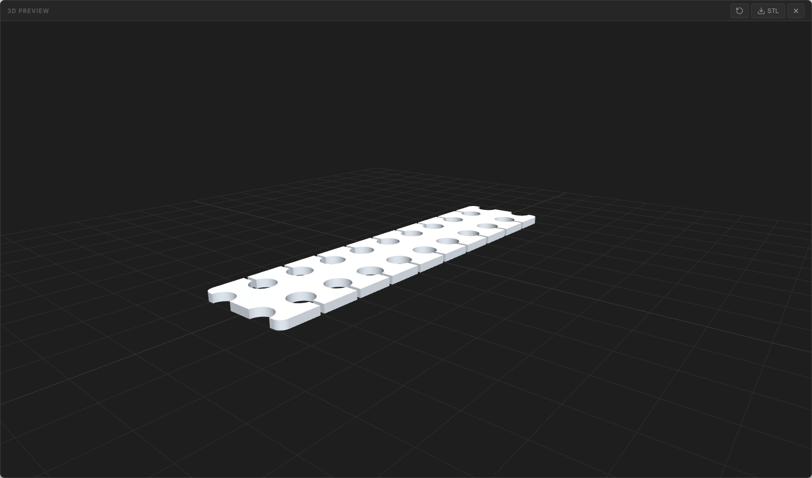

図面から、立体へ。
Millrect は、上面図・正面図などの正投影図を描くと、そこから 3D モデルを自動生成できる作図アプリです（ブラウザ版とデスクトップ版）。 ドキュメントでは実プロダクト Module Joint 1（24×100 mm、板厚 2 mm）を例に、 図面、寸法、レイヤー、3D プレビューまでを同じ題材で説明します。


図面が本体
3D は図面からいつでも作り直せます。図面を編集すれば立体も更新されます。
複数の投影図で立体化
上面図と正面図など、2 枚以上の図面を組み合わせて 3D を生成します。
自動保存
作業内容は自動的に保存されます。次回起動時に続きから再開できます。
STL 出力
3D プレビューで確認したモデルを STL ファイルとして書き出せます。
できること
2D 図面を作る
矩形・円・線・ベジェ・テキスト・寸法線を描き、ページとレイヤーで整理できます。 Google Fonts 登録や参照画像の下絵配置にも対応します。
2D 描画を見る →投影図から 3D を生成する
上面図・正面図・側面図など複数の正投影図を CSG 交差で立体化し、 3D プレビューと STL 出力につなげます。
3D 生成を見る →編集と製図を詰める
塗り・線色、整列、グループ化、Boolean 合成・くり抜き、テキストアウトライン化、 Undo/Redo で図面を整えます。
編集操作を見る →スケッチを下絵にする
参照画像を配置し、実寸がわかる線でスケール校正できます。 AI 連携時は提案図形をゴーストとして確認してから確定します。
スケッチ digitize を見る →AI と部品を作る
MCP から Intent API や Part DSL を使い、mm 指定で箱・パネル・L 字ブラケット・筐体などを生成できます。
AI 連携を見る →判断を記録する
Taste Memory で意図、制約、好み、採否理由、レビュー結果を projectBrief として残し、 Pages タブの制作メモから状態を確認できます。
Taste Memory を見る →ガイド一覧
はじめに
アプリの起動、新規プロジェクトの作成、JSON インポート、最初の図形を描くまで。
読む →設計思想
図面を本体にして、3D・AI・出力を補助として扱う Millrect の考え方。
読む →設計標本帳
作例から、図面・3D・AI/MCP・Part DSL の入口をたどるカタログ。 画像をシナリオ単位で管理する新しい見せ方です。
見る →デスクトップ版
GitHub Releases からの macOS 向けダウンロードと、未署名配布時の起動方法。
読む →画面構成
ツールバー、ツールパレット、キャンバス、右パネル、3D プレビューの見方。
読む →2D 描画
矩形・円・線・ベジェ・テキスト・Google Fonts 登録・寸法線・キャンバス画像。スケッチ取り込み（参照画像・スケール校正）も。
読む →編集操作
選択、プロパティ編集、塗り・線色、整列、グループ化、テキストのアウトライン化、合成・くり抜き、Undo/Redo。
読む →3D 生成
ページ追加で上面図・正面図を作り、立体の確認、塗り色の 3D 反映、STL の書き出し。
読む →保存と出力
プロジェクトの保存・読み込み、PDF / SVG への書き出し。
読む →ショートカット
ツール切替、編集、表示操作のキーボードショートカット一覧。
読む →AI 連携（オプション）
Claude Desktop などから Millrect を操作する MCP 連携。スケッチ digitize も。
読む →開発者ガイド
リポジトリ構成・API・MCP リファレンス。日常の作図には不要です。
読む →5 分で立体を作る
いちばん早い: 起動ダイアログで JSON インポート → samples/module-joint-1.json を開く → 3D プレビューを開く（24×100×2 mm の薄板ジョイント）
自分で描く: ① 新規プロジェクトを作成 → ② 上面図ページで輪郭を描く（矩形・L 字 path など） → ③
Pages タブのページ追加で正面図を追加して同じ部品の輪郭を描く → ④ 3D
プレビューを開く → ⑤ STL を書き出す
詳しい手順は 3D 生成 のページを参照してください。